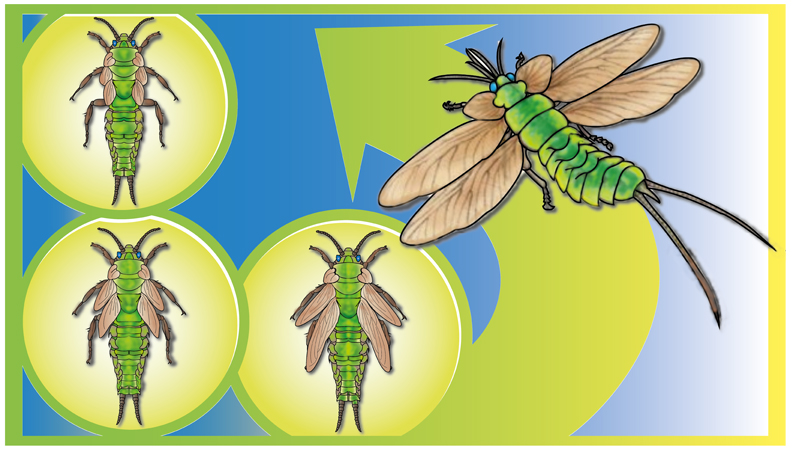

Evolution of insect wings
September 15, 2020 7:15pm IST Vertebrates are often attributed for their ability to fly: birds, mammals (bats), and other animals all took to the skies, with modified forelimbs serving as wings. But, spare a thought for insects, which evolved flight only once and never looked back. Insects are considered the first animals to fly, and they are considered the best at it. The intricate mechanism of their wing muscles is a wonder in itself. Evolution usually works with what it has: new body structures don’t pop-up out of nowhere. But, in the case of insects it is not very clear whether they used modified limbs or, arguably developed a brand new transformation in their physiology. This is very unusual and there’s still not a strong scientific consensus about it. Over the years, various theories have popped up supporting two totally different ideas:
1. WINGS DEVELOPED AS NOVEL STRUCTURES:
The theory of the emergence of wings as novel structures has gained much importance in the past. However, the tissue that gave rise to this novel and evolutionarily crucial structure, and the mechanism that facilitated its evolution are still under intensive debate. Just like legs, wings are found only on the thoracic segments - suggesting that Hox genes limit the expression of wing organiser genes. The insect body plan has three thoracic segments - T1, T2, and T3. Of these, only T2 and T3 build wings. Tomoyasu Labs, Miami’s analyses also uncovered detailed Hox regulation of abdominal wing serial homologs, which can be used as a foundation to elucidate the molecular mechanisms that have facilitated the evolution of bona fide insect wings, as well as the diversification of other wing serial homologs. They found that the formation of ectopic wings in the abdomen upon homeotic transformation relies not only on the previously identified abdominal wing serial homolog (gin-trap) but also on a secondary tissue in the pleural location. Using an enhancer trap line of nubbin (a wing lineage marker), they were able to visualise both of these two tissues (of tergal and pleural nature) contributing to form a complete wing.
2. EVOLUTION THEORY:
In the first half of the 20th century, there were two main theories for the origin of flight in insects, the ‘ flying squirrel ’ and ‘flying fish’ theories:
A).Insects are cold-blooded animals; they need heat from outside to warm themselves up and hence love to sunbathe. They often bask in the sun, and maybe in the past, one individual developed small flaps on it’s back to help soak up the rays. Purely by chance, these flaps might have helped the insects to get carried by the wind. Perhaps, the panels then evolved into a more aerodynamic shape, eventually becoming wings. Although this theory seems fascinating, it is improbable that this happened because the joints and muscles of an insect are very complex structures for them to be evolved by such an evolutionary change on scales.
B).Many insects spend the first part of their lives submerged in water. They breathe through gills which bend and pump themselves to take in Oxygen. It is thought it was gills like these that were developed into wings. It is believed that an ancient insect might have waved its gills to catch the wind and set sail. Gills already had the joints muscles to flap up and down and could then eventually have evolved from sails to wings.
Although all such theories attempt to explain insect wings’ evolution, they still are not competent enough to draw a conclusion. While their origin seems almost "out of the blue," careful developmental and paleontological studies in the future can reveal the real reason behind such a fantastic physiological change in these small creatures.
Author :
KSHITIJ SINHA
Related Articles

Evolution of metamorphosis
NewIt is now known for over 400 years how various animals undergo adverse physical changes during their life. This is one of the most wonderful phenomena of nature and how it evolved is still a mystery....

Why do scorpions glow under UV light
NewHave you ever seen a scorpion under moonlight or UV light? Do you know that these magnificent creatures glow in blue-green color?...

Insect Communication
NewFor humans, it is easier to communicate with each other. We have different languages which we speak and sometimes translate so that people from other countries can also understand...